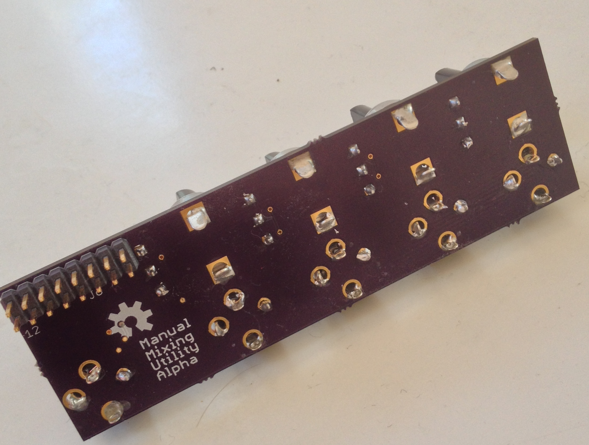

That's right! I've made yet another open-source eurorack module! This one is a simple mixing utility module that mixes up to four inputs together into one output. It's suitable for both CV and audio signals.

Unlike the DCO, but like my other modules, this one is a very simple circuit with easy assembly. It was a nice break from all the complication of my last module.

The fabrication stack was the almost exactly same as the last few times, with designs done in Eagle, fabrication by OSH Park, assembly done at home with laser-cut stencils with the help of my friend Brendan. The only new step was desigining the front panels with the rhino for mac beta. Even though this was a 3D program, it worked much better for technical 2D designs than inkscape, with the exception of format support.
Panels were again laser-cut out of acrylic with the paper mask still on, and then spray-painted.

As always, design files, BOMs, and mouser orders are available on github, under a permissive license. Enjoy!